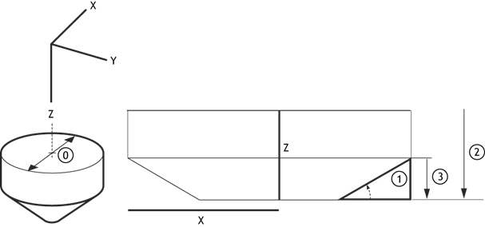
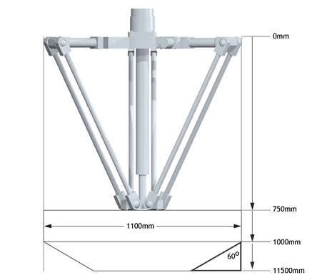

Axis Function
VOLUME_LIMIT(mode[, table_offset])
VOLUME_LIMIT enables a software limit that restricts the motion into a defined three-dimensional shape. The calculations are performed on DPOS and so it can be used in addition to a FRAME . The limit applies to axes defined in a FRAME_GROUP .
VOLUME_LIMIT requires the kinematic runtime FEC
If no FRAME_GROUP is defined then a ‘parameter out of range’ run time error will be returned when VOLUME_LIMIT is called.
All axes in the FRAME_GROUP must have the same UNITS
When the limit is active moves on all axes in the FRAME_GROUP are cancelled and so will stop at FAST_DEC if specified, otherwise at DECEL . Any active SYNC is also stopped. AXISSTATUS bit 15 is also set. This means you should set your VOLUME_LIMIT smaller than the absolute operating limits of the robot.
|
mode: |
0 |
VOLUME_LIMIT is disabled |
|
1 |
Cylinder with cone base volume |
VOLUME_LIMIT(1[, table_offset])
Mode 1 enables a cylinder with a cone base, this is a typical working volume for a delta robot.
The origin for the shape is the centre top. It is possible to align this with your coordinate system using the X, Y and Z offsets.

If you wish to check which USER_FRAME , TOOL_OFFSET and VOLUME_LIMIT are active you can print the details using FRAME_GROUP (group).
|
mode: |
0 |
VOLUME_LIMIT is disabled |
|
1 |
Cylinder with cone base volume |
|
|
table_offset: |
The start position in the table to store the VOLUME_LIMIT configuration |
|
Mode 0 table values, all length values use UNITS from the first axis in the FRAME_GROUP.
|
0 |
Cylinder Diameter |
|
1 |
Cone angle in radians |
|
2 |
Total height |
|
3 |
Cone height |
|
4 |
X offset |
|
5 |
Y offset |
|
6 |
Z offset |
The cylinder with a flat base is typically used with delta robots (FRAME = 14), the following example configures the VOLUME_LIMIT with this configuration.

TABLE(100, 1100) 'Cylinder diameter
TABLE(101, (60 / 360) * 2 * PI) 'Cone angle
TABLE(102, 400) 'Total height
TABLE(103, 150) 'Cone height
TABLE(104, 0) 'X offset
TABLE(105, 0) 'Y offset
TABLE(106, 750) 'Z offset